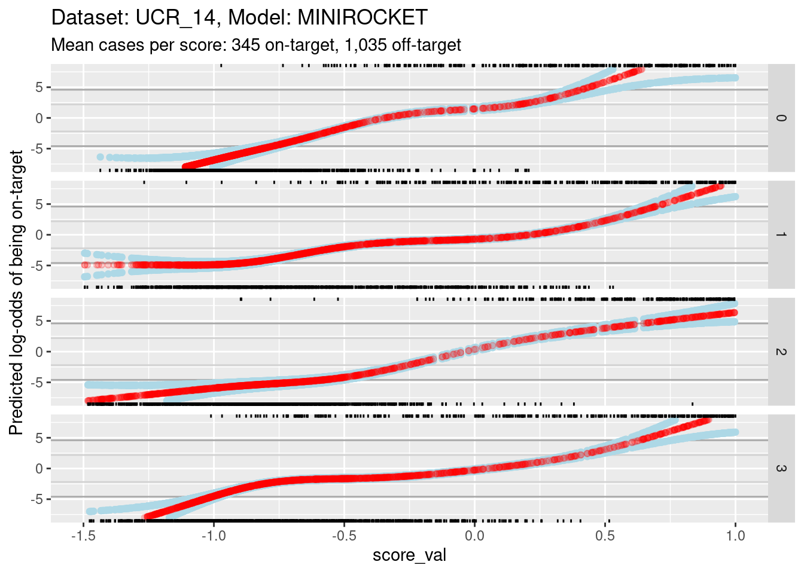
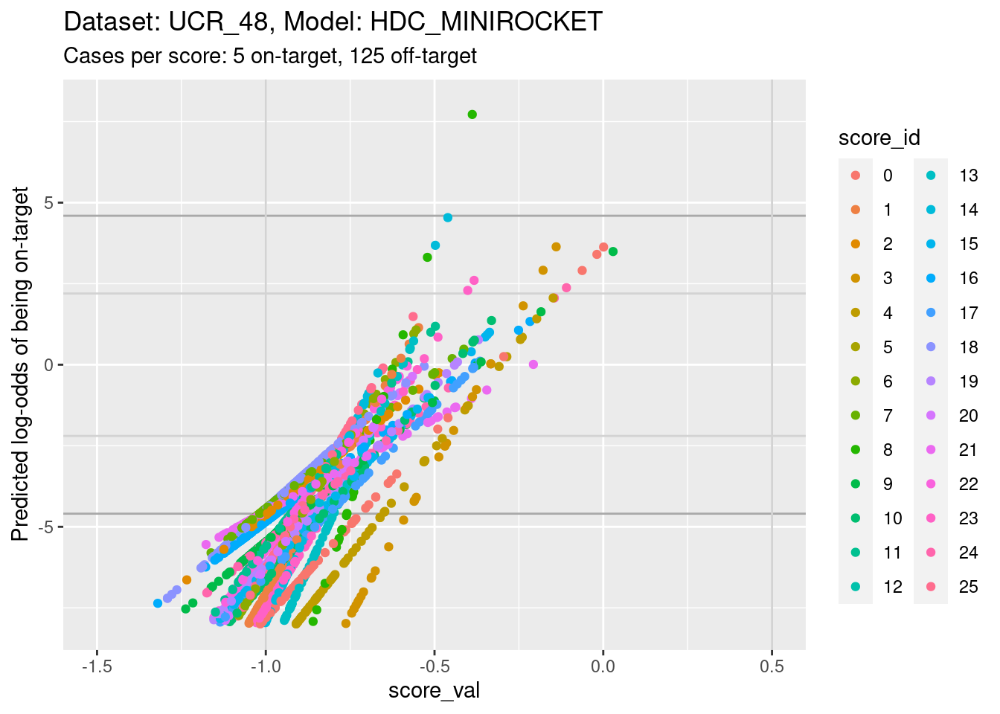
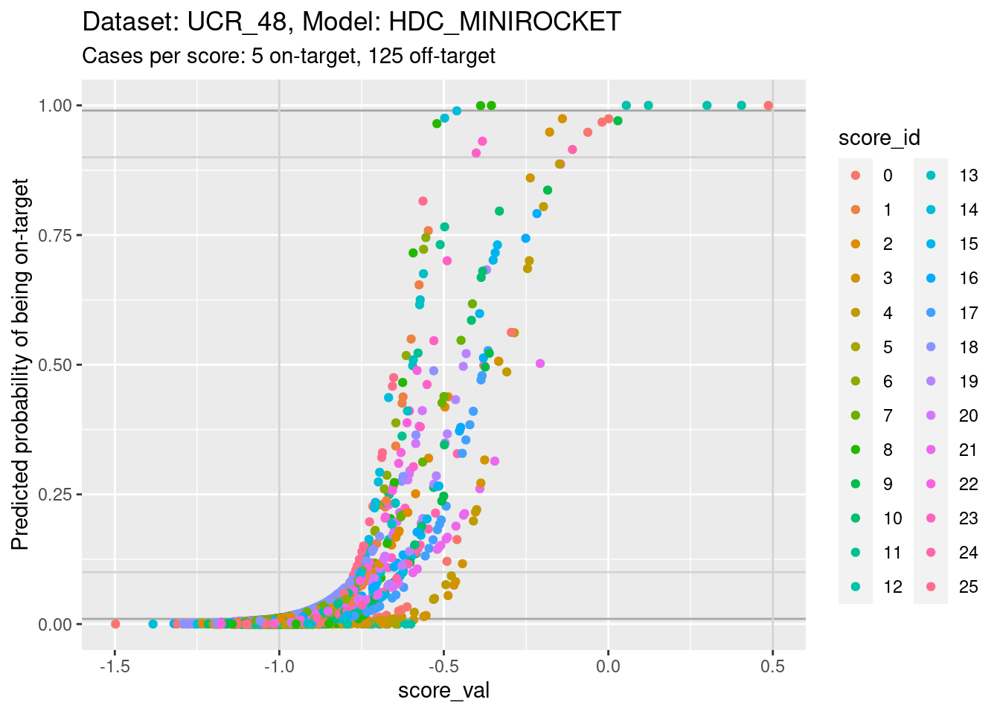

05_score_calibration_1
Ross Gayler
2023-01-27
Last updated: 2023-02-04
Checks: 7 0
Knit directory: multiclass_AUC/
This reproducible R Markdown analysis was created with workflowr (version 1.7.0). The Checks tab describes the reproducibility checks that were applied when the results were created. The Past versions tab lists the development history.
Great! Since the R Markdown file has been committed to the Git repository, you know the exact version of the code that produced these results.
Great job! The global environment was empty. Objects defined in the global environment can affect the analysis in your R Markdown file in unknown ways. For reproduciblity it’s best to always run the code in an empty environment.
The command set.seed(20230112) was run prior to running
the code in the R Markdown file. Setting a seed ensures that any results
that rely on randomness, e.g. subsampling or permutations, are
reproducible.
Great job! Recording the operating system, R version, and package versions is critical for reproducibility.
Nice! There were no cached chunks for this analysis, so you can be confident that you successfully produced the results during this run.
Great job! Using relative paths to the files within your workflowr project makes it easier to run your code on other machines.
Great! You are using Git for version control. Tracking code development and connecting the code version to the results is critical for reproducibility.
The results in this page were generated with repository version 1675364. See the Past versions tab to see a history of the changes made to the R Markdown and HTML files.
Note that you need to be careful to ensure that all relevant files for
the analysis have been committed to Git prior to generating the results
(you can use wflow_publish or
wflow_git_commit). workflowr only checks the R Markdown
file, but you know if there are other scripts or data files that it
depends on. Below is the status of the Git repository when the results
were generated:
Ignored files:
Ignored: .Rhistory
Ignored: .Rproj.user/
Ignored: renv/library/
Ignored: renv/sandbox/
Ignored: renv/staging/
Note that any generated files, e.g. HTML, png, CSS, etc., are not included in this status report because it is ok for generated content to have uncommitted changes.
These are the previous versions of the repository in which changes were
made to the R Markdown
(analysis/05_score_calibration_1.Rmd) and HTML
(docs/05_score_calibration_1.html) files. If you’ve
configured a remote Git repository (see ?wflow_git_remote),
click on the hyperlinks in the table below to view the files as they
were in that past version.
| File | Version | Author | Date | Message |
|---|---|---|---|---|
| Rmd | 1675364 | Ross Gayler | 2023-02-04 | Add notebook 05 |
| Rmd | 95bd23e | Ross Gayler | 2023-02-03 | end 2023-02-03 |
| Rmd | 2740d9d | Ross Gayler | 2023-02-02 | end 2023-02-02 |
| Rmd | 55c2c04 | Ross Gayler | 2023-02-01 | end 2023-02-01 |
| Rmd | 685e374 | Ross Gayler | 2023-01-31 | end 2023-01-31 |
| Rmd | 7111971 | Ross Gayler | 2023-01-29 | end 2023-01-29 |
| Rmd | 1270861 | Ross Gayler | 2023-01-29 | merge |
| Rmd | 11698ed | Ross Gayler | 2023-01-29 | end 2023-01-28 |
| Rmd | 79d899b | Ross Gayler | 2023-01-28 | end 2023-01-28 |
Dependencies
Read the saved example data.
d_scores <- readRDS(file = here::here("output", "d_scores.RDS")) |>
# convert case, class_id and score_id to integer factors for safety & better label order
dplyr::mutate(
case = forcats::as_factor(case),
class_id = forcats::as_factor(class_id),
score_id = forcats::as_factor(score_id)
)Introduction
This is my first attempt at investigating the scaling and calibration of the class scores. It is a first attempt because I am pulling most of the theory from my very hazy memory and I may need to re-do the analyses after I have reviewed the theory.
The models categorising their inputs are treated as black boxes; we don’t see how they work. However, we are concerned with the outputs from the models. Categorisation models could be built to output only the predicted class. However, this would be a poor system design because it would bake in a given level of class bias, so that:
- The system bias could not be optimised with respect to a payoff matrix
- Only a single point on the ROC curve is available, precluding curve-based performance measures such as AUC
For these reasons we are interested in models with outputs prior to the predicted class decision. Arguably, in order for a model to be optimally accurate it needs to output a set of class-specific scores that are a monotonic function of the probability of the input coming from the corresponding class conditional on the inputs. That is \(s_i \triangleq f( P(C = c_i \mid x))\) where \(s_i\) is the score corresponding to class \(i\), \(f()\) is a monotonic function and \(P(C = c_i \mid x)\) is the probability of the input class \(C\) being the class \(c_i\), conditional on the input being \(x\).
If all the classes were equally likely and the payoff matrix was uniform the simplest thing would be for the scores to be the conditional probabilities. In this case the predicted class would be chosen as the class corresponding to the highest probability (choose the most probable class).
If the classes are not equiprobable the conditional probability of each class (if it’s accurately modelled) should account for the different base rates. From Bayes’ theorem this is equivalent to having a multiplicative adjustment for the base rate. A change in the base rates could be accounted for by a multiplicative adjustment to each class score.
If the payoff matrix is nonuniform then the score should be calculated as the conditional probability of each class multiplied by the payoffs to give an expected payoff. This is a multiplication of the vector ([actual class]) of predicted class probabilities with the matrix ([actual class \(\times\) predicted class]) of payoffs to give a vector ([predicted class]) of expected payoffs. The predicted class is chosen as the class corresponding to the highest expected payoff.
The ideal scores would be conditional probabilities, as described above. They would be directly interpretable and be on the correct scale for multiplicative adjustment to accommodate varying payoffs and class base rates. Given that the model development process has baked in specific payoffs and class base rates the actual scores will approximate the expected payoffs described above. The monotonic transform will be identical across class scores in order to guarantee the comparability of scores needed to make the selection of the highest score meaningful.
We are only interested in categorisation models which generate a set of class-specific scores, such that the predicted class is chosen as the class corresponding to the highest class core. These scores can be interpreted as some monotonic transform of the payoff and base rate adjusted probability of the input being that class, conditional on the input. In typical ML modelling there is no payoff matrix and the base rates of the training data are taken as given. In this scenario the class scores are approximately a monotone transform of the probability of the input being that class, conditional on the input. The better the models (in terms of performance), the better the approximation will be. Poorly performing models will only poorly approximate the conditional probability.
Given that the class specific scores will be central to calculation of the multiclass AUC measure it would be useful to better understand the properties of these scores in the example data sets. With the data we have we can determine the relationships between the scores and the conditional probabilities of class membership.
The models are independent for each combination of dataset and model type, so we will analyse them separately. Each class-specific score can be treated as though it is a separate model because the relationship between score and conditional probability of class membership can differ for each class.
Dataset: UCR_14, Model: HDC_MINIROCKET
First we will look at the distributions of scores.
Distributions of scores
There are 342 to 350 cases per class in this dataset and 1,380 cases in total. Each class score is calculated for every case. So there are the same number of cases for each score:class combination. That’s a reasonable number of cases to be visualising distributions with.
Look at the distributions of scores in response to each class on input.
d_scores |>
dplyr::filter(dataset == "UCR_14" & model == "HDC_MINIROCKET") |>
ggplot() +
geom_boxplot(aes(y = score_val, x = paste0(score_id, ":", class_id), fill = score_id)) +
xlab("score_id : class_id") +
labs(
title = "Dataset: UCR_14, Model: HDC_MINIROCKET",
subtitle = glue::glue("Mean cases per score:class combination: 345")
)- The total range is approximately \([-2, 1.5]\).
- The fact that the range straddles zero suggests that the zero point is somewhat arbitrary. It shouldn’t be thought of as a multiplicative zero (e.g. as in a probability).
- The distributions are roughly similar across scores, which is expected because the scores need to be comparable to allow choosing the predicted class.
- However, there are some detailed differences in the distributions between classes. For example, the distribution of score 2 in response to class 2 appears higher than the on-target distributions for the other scores. This is not necessarily a problem because the calibration of the scores can be identical across scores even if the distributions are different. Differences in the height of the distribution would reflect differing ability of the models to discriminate.
- The classes are reasonably discriminable by the scores.
- Note that for this dataset there are three distributions of off-target scores for every one distribution of on-target scores. If the classes are collapsed into on-target versus off-target cases the distributions will be calculated mostly from off-target cases This will not upset the calibration analysis because this is based on conditional outcome, so is independent of the underlying distribution (to a first approximation).
Now collapse the classes into on-target and off-target for each class score. This isn’t wildly important; more of a didactic step.
d_scores |>
dplyr::filter(dataset == "UCR_14" & model == "HDC_MINIROCKET") |>
ggplot() +
geom_boxplot(aes(y = score_val, x = paste0(score_id, ":", score_id == class_id), fill = score_id)) +
xlab("score_id : OnTarget") +
labs(
title = "Dataset: UCR_14, Model: HDC_MINIROCKET",
subtitle = "Mean cases per score: 345 on-target, 1,035 off-target"
)Now collapse the classes entirely to show the distribution for each class score.
d_scores |>
dplyr::filter(dataset == "UCR_14" & model == "HDC_MINIROCKET") |>
ggplot() +
geom_density(aes(y = score_val, fill = score_id)) +
labs(
title = "Dataset: UCR_14, Model: HDC_MINIROCKET",
subtitle = "Mean cases per score: 1,380"
) +
facet_grid(cols = vars(score_id))- It is clear that the distribution for each class score is bimodal, with the minor mode corresponding to the on-target cases and the major mode corresponding to the off-target cases.
Calibrations of scores
The calibration analysis consists of determining the score to conditional probability relationship, separately for each class score. The most natural way to do that statistically is to fit a smoothing spline logistic regression from the score to the binary outcome indicating whether the class of the current case corresponds to the class of the score. Logistic regression is the standard technique for modelling a binary outcome. A smoothing spline is a way for estimating a data driven smooth function of the input variable.
We are attempting to find the probability of a case being on-target (versus off-target) as a function of score for each class score. It’s worth emphasising that this probability is not directly observable. It is a latent parameter that is estimated from the data with respect to a model. Different probability estimation models will give different estimates of the probabilities. The analyses below are to be interpreted as model-fitting exercises.
Fit a calibration model.
# look at the combination of one dataset and model
d_sub <- d_scores |>
dplyr::filter(dataset == "UCR_14" & model == "HDC_MINIROCKET")
# fit smoothing spline logistic regression separately for each class score
fit_smooth <- mgcv::gam((score_id == class_id) ~ s(score_val, by = score_id) + score_id + 1, family = binomial(), data = d_sub)- Restrict the data to one dataset and one scoring model (because that
is the mechanism that generates the class scores and therefore
determines their characteristics).
- The calibration model is a logistic regression
(
family = binomial()). - The outcome being predicted is whether the case is on-target
(
score_id == class_id). - The first term of the predictor is a smooth function of the class
score, separately for each class score
(
s(score_val, by = score_id)). - The second and third terms of the predictor allow the mean
probability of being on-target to vary between class scores
(
+ score_id + 1).
Look at the fitted model.
summary(fit_smooth)
Family: binomial
Link function: logit
Formula:
(score_id == class_id) ~ s(score_val, by = score_id) + score_id +
1
Parametric coefficients:
Estimate Std. Error z value Pr(>|z|)
(Intercept) -6.2161 3.9750 -1.564 0.118
score_id1 1.5185 4.3135 0.352 0.725
score_id2 0.2322 4.3605 0.053 0.958
score_id3 2.5932 6.5865 0.394 0.694
Approximate significance of smooth terms:
edf Ref.df Chi.sq p-value
s(score_val):score_id0 3.209 3.760 69.582 < 2e-16 ***
s(score_val):score_id1 3.102 3.759 110.523 < 2e-16 ***
s(score_val):score_id2 1.000 1.000 7.703 0.00553 **
s(score_val):score_id3 5.004 5.350 111.312 < 2e-16 ***
---
Signif. codes: 0 '***' 0.001 '**' 0.01 '*' 0.05 '.' 0.1 ' ' 1
R-sq.(adj) = 0.875 Deviance explained = 86.5%
UBRE = -0.84176 Scale est. = 1 n = 5520- Each of the smooth terms (e.g.
s(score_val):score_id0) is “significant” (i.e.p-value< 0.05). That is, the smoothed function of the score predicts the outcome (being on-target) better than would be expected by chance. - The effective degrees of freedom (
edf) varies across the class of the smooth term. The effective degrees of freedom indicates the “wiggliness” of the curve. - The smooth function estimated for class 2
(
s(score_val):score_id2) has 1 effective degree of freedom. That is, it is a straight line.
Plot the effect curves for each class score.
# get fitted prediction and standard errors for each case
pred <- predict(fit_smooth, se.fit = TRUE)
d_sub <- d_sub |>
dplyr::bind_cols(pred_lo = pred$fit, pred_se = pred$se.fit) |>
dplyr::mutate(pred_p = exp(pred_lo) / (1 + exp(pred_lo))) # convert log-odds to probability
# look at the smoothed calibration curves
d_sub |>
ggplot() +
geom_point(aes(x = score_val, y = pred_lo + pred_se), colour = "lightblue") +
geom_point(aes(x = score_val, y = pred_lo - pred_se), colour = "lightblue") +
geom_point(aes(x = score_val, y = pred_lo), colour = "red", alpha = 0.1) +
geom_rug(aes(x = score_val), data = dplyr::filter(d_sub, score_id == class_id), sides = "t", alpha = 0.1) +
geom_rug(aes(x = score_val), data = dplyr::filter(d_sub, score_id != class_id), sides = "b", alpha = 0.1) +
labs(
title = "Dataset: UCR_14, Model: HDC_MINIROCKET",
subtitle = "Mean cases per score: 345 on-target, 1,035 off-target"
) +
facet_grid(cols = vars(score_id)) +
ylim(-50, 50)Warning: Removed 62 rows containing missing values (`geom_point()`).Warning: Removed 22 rows containing missing values (`geom_point()`).Warning: Removed 1 rows containing missing values (`geom_point()`).- Each panel shows the calibration curve for one class score.
- The x axis is the score value.
- The y axis is log-odds of the outcome (being on-target). Log-odds is
the “natural” scale for predictions from a logistic regression.
- Log-odds 0 correspond to 0.5 predicted probability of being on-target.
- Positive log-odds corresponds to predicted probability of being on-target being greater than 0.5.
- Negative log-odds corresponds to predicted probability of being on-target being less than 0.5.
- Log-odds 7 corresponds to odds of roughly 1,000:1 (probability roughly 0.999). Given the number of cases in the dataset this is roughly the most extreme probability that can be empirically demonstrated.
- The red curve shows the predicted probability of being on-target (as log-odds) as a function of score value.
- The blue curves indicate the statistical uncertainty of the estimated probability. They are one standard error above and below the prediction.
- The curves are plotted as points rather than lines. Each point corresponds to a single case in the dataset. This allows us to better see the distribution of the support of the curves.
- The tick marks at the top boundary of each panel show the score values for all the on-target cases in the dataset.
- The tick marks at the bottom boundary of each panel show the score
values for all the off-target cases in the dataset.
- At a very rough level of approximation all the curves show
a linear relationship between score and log-odds.
- This is not very surprising because there is an early result from Fisher showing that the discriminant score between two multivariate distributions (with equal covariance matrices) is some linear transform of the log-odds of membership. This statement is more about the shapes of distributions than the mechanism used to estimate the score, so it should hold for any mechanism that generates a reasonable discriminant score.
- The calibration curve for score 2 is a straight line rather than a
wiggly curve. It has been fit as a linear term rather than a smooth
term.
- The fitting mechanism uses cross-validation to choose the effective degrees of freedom that maximise statistical generalisation under cross-validation. So the cross-validation is responsible for the effective degrees of freedom being set to 1 for this curve.
- Higher effective degrees of freedom is roughly equivalent to fitting
the curve in smaller data windows along the score value axis.
- The fitting algorithm relies on there being variation in the outcome within the data window.
- For scores 0, 1, and 3, you can see that the uncertainty of the estimated probabilities greatly increases at the extreme values of score.
- The increase in uncertainty starts where the distributions of on-target and off-target scores no longer overlap (check the tick marks on the top and bottom boundaries).
- With less than full width data windows the variation in outcome within the window becomes very small where the on-target and off-target score distributions do not overlap.
- For score 2, the on-target and off-target distributions are so well separated that there is very little overlap in the centre.
- In order to ensure enough outcome variation in the data window for score 2, the cross-validation mechanism effectively sets the data window to full width, which results in a linear (non-wiggly) fit.
- As the distribution become more separable the regression approach
becomes less appropriate because the uncertainty of the slope is higher.
If the on-target and off-target distributions are perfectly separable,
the slope can’t be estimated with regression.
- This is not a problem for AUC estimation, but does mean that calibration needs to be approached with some care.
- For all scores, the relationship between score and outcome is
(almost) monotonic.
This is as expected and needs to be true for the categorisation mechanism (assign the class of the highest score) to work.
There is a slight nonmonotonicity in the calibration curve for score 3 (see later analyses), but this is so small as to be ignorable.
- For scores 0, 1, and 3, there is a central portion of the
calibration curve with a relatively low positive linear slope. Outside
the central section, the tails have relatively high positive linear
slopes.
- It is possible that the high slopes in the tails are statistical
artifacts caused by the lack of overlapping on-target and off-target
cases in the tails.
- It is possible that the high slopes in the tails are statistical
artifacts caused by the lack of overlapping on-target and off-target
cases in the tails.
- The limits of the y axis have been chosen very wide to show the confidence intervals
- Such extreme log-odds are implausible in the sense that they are impossible to empirically demonstrate with a sample the size we are using.
- Extreme log-odds map to probabilities close to 0 or 1, at the extremes a large change in log-odds corresponds to a small change in probability.
- Probability is the “natural” scale for decision making. So at extreme log-odds it probably doesn’t matter what the exact log-odds are because they map to essentially the same probability.
Because of the extreme y axis limits it is hard to see the detail of the calibration curves around log-odds 0. Zoom in the viewing port to give a better view (by using less extreme limits on the y axis). Also, display the panels as rows rather than columns because this gives a better aspect ratio for judging slopes.
d_sub |>
ggplot() +
geom_hline(yintercept = log(c(1/99, 99/1)), colour = "darkgrey") +
geom_hline(yintercept = log(c(1/9, 9/1)), colour = "lightgrey") +
geom_point(aes(x = score_val, y = pred_lo + pred_se), colour = "lightblue") +
geom_point(aes(x = score_val, y = pred_lo - pred_se), colour = "lightblue") +
geom_point(aes(x = score_val, y = pred_lo), colour = "red", alpha = 0.2) +
geom_rug(aes(x = score_val), data = dplyr::filter(d_sub, score_id == class_id), sides = "t", alpha = 1) +
geom_rug(aes(x = score_val), data = dplyr::filter(d_sub, score_id != class_id), sides = "b", alpha = 1) +
labs(
title = "Dataset: UCR_14, Model: HDC_MINIROCKET",
subtitle = "Mean cases per score: 345 on-target, 1,035 off-target"
) +
ylab("Predicted log-odds of being on-target") +
facet_grid(rows = vars(score_id)) +
ylim(-8, 8) + xlim(-0.75, 0.5)Warning: Removed 4001 rows containing missing values (`geom_point()`).Warning: Removed 4224 rows containing missing values (`geom_point()`).Warning: Removed 4144 rows containing missing values (`geom_point()`).- The dark grey horizontal lines are set at odds of 1:99 and 99:1 (probabilities of 0.01 and 0.99).
- The light grey horizontal lines are set at odds of 1:9 and 9:1
(probabilities of 0.1 and 0.9).
- For score 2 you can see that there is almost no overlap between the distributions of on-target and off-target scores.
- Ignore score 2 from here on because of the uncertainty of its
calibration.
- For scores 0, 1, and 3, there is sufficient overlap between the on-target and off-target distributions of scores to have reasonable confidence in the calibration curves in the score range of roughly -0.375 to 0.25.
The reason for looking at calibration curves is to judge whether different scores correspond to the same probability of being on-target at the same score. Plot the calibration curves on the same panel to facilitate comparison
d_sub |>
ggplot() +
geom_hline(yintercept = log(c(1/99, 99/1)), colour = "darkgrey") +
geom_hline(yintercept = log(c(1/9, 9/1)), colour = "lightgrey") +
geom_vline(xintercept = c(-0.375, 0.25), colour = "lightgrey") +
geom_point(aes(x = score_val, y = pred_lo, colour = score_id)) +
labs(
title = "Dataset: UCR_14, Model: HDC_MINIROCKET",
subtitle = "Mean cases per score: 345 on-target, 1,035 off-target"
) +
ylab("Predicted log-odds of being on-target") +
ylim(-8, 8) + xlim(-0.75, 0.5)Warning: Removed 4144 rows containing missing values (`geom_point()`).- The light grey vertical lines are set at scores of -0.375 and 0.25.
In this interval I have reasonable confidence in the calibration curves
for scores 0, 1, and 3.
- In the score range of interest, the calibration curves on the log-odds scale are roughly parallel and vertically separated. That is, although they show the same trend of log-odds of being on target increasing with score, they have different actual probabilities at the same score.
- In particular, note the calibration curves for scores 1 and 3 (which we’ll return to later). The curve for score 3 is above the curve for score 1. That is, for a case with the same score value for score 1 and score 3, the predicted probability of being class 3 is higher than the predicted probability of being class 1. So, even though according to the score values the case is equally likely to be class 1 or class 3, the case is actually more likely to be class 3 than class 1.
Plot the same graph on a probability scale instead of log-odds.
d_sub |>
ggplot() +
geom_hline(yintercept = c(0.01, 0.99), colour = "darkgrey") +
geom_hline(yintercept = c(0.1, 0.9), colour = "lightgrey") +
geom_vline(xintercept = c(-0.375, 0.25), colour = "lightgrey") +
geom_point(aes(x = score_val, y = pred_p, colour = score_id)) +
labs(
title = "Dataset: UCR_14, Model: HDC_MINIROCKET",
subtitle = "Mean cases per score: 345 on-target, 1,035 off-target"
) +
ylab("Predicted probability of being on-target") +
ylim(0, 1) + xlim(-0.75, 0.5)Warning: Removed 3926 rows containing missing values (`geom_point()`).- You can see that the probability of being on-target can vary widely
across class scores at the same score.
- Again comparing score 1 and score 3, you can see that at the score
value of 0 the probability of being class 3 is more than twice the twice
the probability of being class 1, whereas the probabilities should be
equal if the scores were accurately calibrated.
- This means that the algorithm of assigning the class corresponding to the highest class score will not be behaving as intended if the scores are close.
- This is possibly not as bad as it sounds, because the majority of score pairs for the same cases have high and low scores rather than similar scores. So it will probably only affect the class assignment in a small proportion of cases. (For these scores the maximum separation between the curves is approximately 4 log-odds units, equivalent to a difference of roughly 0.7 score units.)
- The accuracy of calibration is probably less important for very low
scores because at least one of the other scores is probably much higher.
So the miscalibration at very low scores will probably have little
impact on accuracy.
- Log-odds can range form \(-\infty\) to \(\infty\), whereas probabilities are bounded to lie between 0 and 1. For modestly large log-odds (say, absolute value greater than 8), a large change in log-odds corresponds to a minuscule change in probability. For practical purposes, this means that cases looking identical on the probability scale can look very different on the log-odds scale.
- If the class score curves are calibrated at extreme log-odds values, it means that the predicted class will be driven by the differences in ordering of the miscalibrated log-odds curves, when the probabilities are so similar that it’s hard to justify the predicted class depending on such small differences.
- Perhaps in such extreme cases (multiple predicted probabilities being near 1 or 0) the choice of predicted class should be random with selection probabilities equal to the class base rates.
- This effect is probably less important for very low scores because at least one of the other scores is probably much higher. So the miscalibration at very low scores will probably have little impact on accuracy.
- Cases where two class score probabilities are both near 1 should also be rare (because for well-calibrated, perfect models the class probabilities should sum to 1). However, it is conceivable that new cases , never seen in the training data, might be encountered that looked strongly like two classes, resulting in high values on both class scores.
Look for the impact of score miscalibration using a pair of scores. We will look at scores 1 and 3 because they have previously been identified as having quite some overlap, which makes the pattern we are looking for more visible. To simplify the analysis we only look at cases whose class is 1 or 3 (corresponding to scores 1 and 3).
d_sub |>
dplyr::filter(class_id %in% c(1, 3)) |>
tidyr::pivot_wider(
id_cols = c(dataset, model, case, class_id),
names_from = score_id,
values_from = score_val,
names_prefix = "score_"
) |>
ggplot() +
geom_abline(slope = 1, intercept = 0) +
geom_abline(slope = 1, intercept = c(-0.7, 0.7), colour = "grey") +
geom_point(aes(x = score_1, y = score_3, colour = class_id)) +
coord_equal()
- The black diagonal line indicates equality of scores 1 and 3. For cases above the diagonal, score 3 is greater than score 1 and the categorisation algorithm will assign them to class 3. For cases below the diagonal, score 3 is less than score 1 and the categorisation algorithm will assign them to class 1.
- The two grey lines parallel to the diagonal are 0.7 score units
above and below the diagonal. They indicate the rough band of potential
misclassification due to miscalibration of the scores.
- Only one case belonging to class 1 has been misclassified as belonging to class 3 (i.e. falls above the diagonal).
- A large number of class 3 cases fall below the diagonal and would be misclassified as belonging to class 1.
- This pattern is consistent with the miscalibration identified earlier.
Summary
- The scores for this dataset and model span the range of positive and negative values.
- The scores are roughly linear transforms of the log-odds of the case being on-target.
- The calibrations curves (almost) monotonic.
- Estimating calibration curves is technically tricky because the
scores are quite good at separating the classes. This means there is
little overlap of the distributions of score values for on-target an
off-target cases.
- Slopes of the calibration curves are uncertain at extreme scores where there are no cases from the opposite class.
- Global slope of the calibration curve is uncertain when estimating via logistic regression if the classes are almost perfectly separable (there is little overlap between the on-target and off-target distributions in the middle).
- There is evidence for some miscalibration (i.e. the same score value for different class scores corresponds to different probabilities of the case being on-target).
- The miscalibration of the scores can cause some misclassification of the cases.
Dataset: UCR_14, Model: MINIROCKET
Now we repeat those analyses for a different model on the same dataset. We drop some of the less useful analyses and a lot of the text explanation where it would be a repetition of the earlier analyses.
Distributions of scores
There are 342 to 350 cases per class in this dataset and 1,380 cases in total. Each class score is calculated for every case. So there are the same number of cases for each score:class combination. That’s a reasonable number of cases to be visualising distributions with.
Look at the distributions of scores in response to each class on input.
d_scores |>
dplyr::filter(dataset == "UCR_14" & model == "MINIROCKET") |>
ggplot() +
geom_boxplot(aes(y = score_val, x = paste0(score_id, ":", class_id), fill = score_id)) +
xlab("score_id : class_id") +
labs(
title = "Dataset: UCR_14, Model: MINIROCKET",
subtitle = glue::glue("Mean cases per score:class combination: 345")
)- The total range is approximately \([-2, 1.5]\), as for the other model on the same dataset.
- The class scores are reasonable at detecting on-target cases, but not as good as the previous model.
Collapse the classes entirely to show the distribution for each class score.
d_scores |>
dplyr::filter(dataset == "UCR_14" & model == "MINIROCKET") |>
ggplot() +
geom_density(aes(y = score_val, fill = score_id)) +
labs(
title = "Dataset: UCR_14, Model: MINIROCKET",
subtitle = "Mean cases per score: 1,380"
) +
facet_grid(cols = vars(score_id))
- The distribution for each class score is bimodal, as expected.
Calibrations of scores
Fit a calibration model.
# look at the combination of one dataset and model
d_sub <- d_scores |>
dplyr::filter(dataset == "UCR_14" & model == "MINIROCKET")
# fit smoothing spline logistic regression separately for each class score
fit_smooth <- mgcv::gam((score_id == class_id) ~ s(score_val, by = score_id) + score_id + 1, family = binomial(), data = d_sub)- Restrict the data to one dataset and one scoring model (because that
is the mechanism that generates the class scores and therefore
determines their characteristics).
- The calibration model is a logistic regression
(
family = binomial()). - The outcome being predicted is whether the case is on-target
(
score_id == class_id). - The first term of the predictor is a smooth function of the class
score, separately for each class score
(
s(score_val, by = score_id)). - The second and third terms of the predictor allow the mean
probability of being on-target to vary between class scores
(
+ score_id + 1).
Look at the fitted model.
summary(fit_smooth)
Family: binomial
Link function: logit
Formula:
(score_id == class_id) ~ s(score_val, by = score_id) + score_id +
1
Parametric coefficients:
Estimate Std. Error z value Pr(>|z|)
(Intercept) -2.1885 0.9137 -2.395 0.0166 *
score_id1 0.2085 0.9671 0.216 0.8293
score_id2 -0.8885 1.0290 -0.863 0.3879
score_id3 0.3819 1.0180 0.375 0.7075
---
Signif. codes: 0 '***' 0.001 '**' 0.01 '*' 0.05 '.' 0.1 ' ' 1
Approximate significance of smooth terms:
edf Ref.df Chi.sq p-value
s(score_val):score_id0 3.989 4.699 169.4 <2e-16 ***
s(score_val):score_id1 5.145 6.040 218.1 <2e-16 ***
s(score_val):score_id2 3.747 4.654 193.2 <2e-16 ***
s(score_val):score_id3 5.004 5.766 174.1 <2e-16 ***
---
Signif. codes: 0 '***' 0.001 '**' 0.01 '*' 0.05 '.' 0.1 ' ' 1
R-sq.(adj) = 0.738 Deviance explained = 71%
UBRE = -0.6658 Scale est. = 1 n = 5520- Each of the smooth terms (e.g.
s(score_val):score_id0) is “significant” (i.e.p-value< 0.05). That is, the smoothed function of the score predicts the outcome (being on-target) better than would be expected by chance. - The effective degrees of freedom (
edf) varies across the class of the smooth term. The effective degrees of freedom indicates the “wiggliness” of the curve. - Unlike the previous model, the smooth function estimated for class 2
(
s(score_val):score_id2) has more than 1 effective degree of freedom. That is, it is not a straight line. This is because class 2 is not almost perfectly separable with this model.
Plot the effect curves for each class score.
# get fitted prediction and standard errors for each case
pred <- predict(fit_smooth, se.fit = TRUE)
d_sub <- d_sub |>
dplyr::bind_cols(pred_lo = pred$fit, pred_se = pred$se.fit) |>
dplyr::mutate(pred_p = exp(pred_lo) / (1 + exp(pred_lo))) # convert log-odds to probability
# look at the smoothed calibration curves
d_sub |>
ggplot() +
geom_point(aes(x = score_val, y = pred_lo + pred_se), colour = "lightblue") +
geom_point(aes(x = score_val, y = pred_lo - pred_se), colour = "lightblue") +
geom_point(aes(x = score_val, y = pred_lo), colour = "red", alpha = 0.1) +
geom_rug(aes(x = score_val), data = dplyr::filter(d_sub, score_id == class_id), sides = "t", alpha = 0.1) +
geom_rug(aes(x = score_val), data = dplyr::filter(d_sub, score_id != class_id), sides = "b", alpha = 0.1) +
labs(
title = "Dataset: UCR_14, Model: MINIROCKET",
subtitle = "Mean cases per score: 345 on-target, 1,035 off-target"
) +
facet_grid(cols = vars(score_id)) +
ylim(-25, 25)Warning: Removed 1 rows containing missing values (`geom_point()`).- The y axis range is much smaller for this model than the previous
model. This is because:
- The distributions are less separable, so the log-odds of being on-target are less extreme (by definition).
- The score value regions of minimal overlap are smaller, so there is less uncertainty in the estimations.
Because of the extreme y axis limits it is hard to see the detail of the calibration curves around log-odds 0. Zoom in the viewing port to give a better view (by using less extreme limits on the y axis). Also, display the panels as rows rather than columns because this gives a better aspect ratio for judging slopes.
d_sub |>
ggplot() +
geom_hline(yintercept = log(c(1/99, 99/1)), colour = "darkgrey") +
geom_hline(yintercept = log(c(1/9, 9/1)), colour = "lightgrey") +
geom_point(aes(x = score_val, y = pred_lo + pred_se), colour = "lightblue") +
geom_point(aes(x = score_val, y = pred_lo - pred_se), colour = "lightblue") +
geom_point(aes(x = score_val, y = pred_lo), colour = "red", alpha = 0.2) +
geom_rug(aes(x = score_val), data = dplyr::filter(d_sub, score_id == class_id), sides = "t", alpha = 1) +
geom_rug(aes(x = score_val), data = dplyr::filter(d_sub, score_id != class_id), sides = "b", alpha = 1) +
labs(
title = "Dataset: UCR_14, Model: MINIROCKET",
subtitle = "Mean cases per score: 345 on-target, 1,035 off-target"
) +
ylab("Predicted log-odds of being on-target") +
facet_grid(rows = vars(score_id)) +
ylim(-8, 8) + xlim(-1.5, 1)Warning: Removed 491 rows containing missing values (`geom_point()`).Warning: Removed 874 rows containing missing values (`geom_point()`).Warning: Removed 611 rows containing missing values (`geom_point()`).
- The dark grey horizontal lines are set at odds of 1:99 and 99:1 (probabilities of 0.01 and 0.99).
- The light grey horizontal lines are set at odds of 1:9 and 9:1
(probabilities of 0.1 and 0.9).
- For all the class scores 0, 1, and 3, there is sufficient overlap between the on-target and off-target distributions of scores to have reasonable confidence in the calibration curves in the score range of roughly -1 to 0.5.
The reason for looking at calibration curves is to judge whether different scores correspond to the same probability of being on-target at the same score. Plot the calibration curves on the same panel to facilitate comparison
d_sub |>
ggplot() +
geom_hline(yintercept = log(c(1/99, 99/1)), colour = "darkgrey") +
geom_hline(yintercept = log(c(1/9, 9/1)), colour = "lightgrey") +
geom_vline(xintercept = c(-1, 0.5), colour = "lightgrey") +
geom_point(aes(x = score_val, y = pred_lo, colour = score_id)) +
labs(
title = "Dataset: UCR_14, Model: MINIROCKET",
subtitle = "Mean cases per score: 345 on-target, 1,035 off-target"
) +
ylab("Predicted log-odds of being on-target") +
ylim(-8, 8) + xlim(-1.5, 1)Warning: Removed 611 rows containing missing values (`geom_point()`).
- The light grey vertical lines are set at scores of -1 and 0.5. In
this interval I have reasonable confidence in the calibration curves for
all the class scores.
- In the score range of interest, the calibration curves on the log-odds scale are very roughly linear and of different slopes so that their vertical ordering changes as the score value increases.
- At a more detailed level of examination there are clear nonlinearities in the curves and some regions where the curves become relatively flat.
Plot the same graph on a probability scale instead of log-odds.
d_sub |>
ggplot() +
geom_hline(yintercept = c(0.01, 0.99), colour = "darkgrey") +
geom_hline(yintercept = c(0.1, 0.9), colour = "lightgrey") +
geom_vline(xintercept = c(-1, 0.5), colour = "lightgrey") +
geom_point(aes(x = score_val, y = pred_p, colour = score_id)) +
labs(
title = "Dataset: UCR_14, Model: MINIROCKET",
subtitle = "Mean cases per score: 345 on-target, 1,035 off-target"
) +
ylab("Predicted probability of being on-target") +
ylim(0, 1) + xlim(-1.5, 1)Warning: Removed 207 rows containing missing values (`geom_point()`).- You can see that the probability of being on-target can vary widely
across class scores at the same score.
Look for the impact of score miscalibration using a pair of scores.
We will look at scores 1 and 3 because they have previously been identified as having quite some overlap, which makes the pattern we are looking for more visible. To simplify the analysis we only look at cases whose class is 1 or 3 (corresponding to scores 1 and 3).
d_sub |>
dplyr::filter(class_id %in% c(1, 3)) |>
tidyr::pivot_wider(
id_cols = c(dataset, model, case, class_id),
names_from = score_id,
values_from = score_val,
names_prefix = "score_"
) |>
ggplot() +
geom_abline(slope = 1, intercept = 0) +
geom_point(aes(x = score_1, y = score_3, colour = class_id)) +
coord_equal()- Class 3 cases are much more likely to be misclassified as class 1 than vice versa.
Repeat that plot for classes 2 and 3.
d_sub |>
dplyr::filter(class_id %in% c(2, 3)) |>
tidyr::pivot_wider(
id_cols = c(dataset, model, case, class_id),
names_from = score_id,
values_from = score_val,
names_prefix = "score_"
) |>
ggplot() +
geom_abline(slope = 1, intercept = 0) +
geom_point(aes(x = score_2, y = score_3, colour = class_id)) +
coord_equal()- Class 3 cases are much more likely to be misclassified as class 2 than vice versa.
Summary
Essentially the same as for the other model on this dataset:
- There is some miscalibration of the class scores.
Dataset: UCR_48, Model: HDC_MINIROCKET
Now we repeat those analyses for a different dataset. This dataset has a relatively low number of cases, which constrains the useful analyses even further.
Distributions of scores
There are exactly 5 cases per class and 26 classes in this dataset, giving 130 cases in total. Each class score is calculated for every case (26 scores per case), so there are 130 cases for each class score (5 cases per class by 26 classes). That’s a small number of cases to be visualising distributions with. It’s also a small number of cases to be fitting smoothing splines for estimating the calibration curve. The detailed analyses will have to differ a bit from the previous dataset.
For every class score there are 5 on-target cases and 125 off-target cases. The class imbalance is much larger than in the previous dataset. This will make display of distributions and fitting of models more difficult.
The number of score:class combinations is \(26^2\) (676). That’s far too many combinations to be plotting them all as distributions on a single graph. So the graphs will have to differ a bit from the previous dataset
Look at the distributions of scores for on-target and off-target cases.
d_scores |>
dplyr::filter(dataset == "UCR_48" & model == "HDC_MINIROCKET") |>
ggplot() +
geom_boxplot(aes(y = score_val,
x = paste0(sprintf("%02i", as.numeric(as.character(score_id))), ":", score_id == class_id), # yuk
fill = score_id), show.legend = FALSE) +
theme(axis.text.x = element_text(angle = -90, hjust = 0)) +
xlab("score_id : OnTarget") +
labs(
title = "Dataset: UCR_48, Model: HDC_MINIROCKET",
subtitle = "Cases per class score: 5 on-target, 125 off-target"
)- The total range is approximately \([-1.5, 1]\).
- All classes appear reasonably separable by their corresponding class scores.
- A small number of classes are perfectly separable (or almost so).
There is no point collapsing the classes entirely to show the distribution for each class score because the extreme on-target/off-target imbalance makes it impossible to see the contribution of the on-target distribution.
Calibrations of scores
Fit a calibration model. Because there are only 5 on-target cases per class score, fit linear effects rather than smoothing splines.
# look at the combination of one dataset and model
d_sub <- d_scores |>
dplyr::filter(dataset == "UCR_48" & model == "HDC_MINIROCKET")
# fit a linear effect logistic regression separately for each class score
fit_lin <- glm((score_id == class_id) ~ score_id:score_val + score_id + 1, family = binomial(), data = d_sub)Warning: glm.fit: fitted probabilities numerically 0 or 1 occurred- Restrict the data to one dataset and one scoring model (because that
is the mechanism that generates the class scores and therefore
determines their characteristics).
- The calibration model is a logistic regression
(
family = binomial()). - The outcome being predicted is whether the case is on-target
(
score_id == class_id). - The first term of the predictor is the interaction of class score
and score value (
score_id:class_id). - The second and third terms of the predictor allow the mean
probability of being on-target to vary between class scores
(
+ score_id + 1). - This model is equivalent to fitting an ordinary logistic regression
separately for each class score (i.e. 26 separate logistic regression
models).
- Note the warning that some of the fitted probabilities were
numerically 0 or 1. This was likely caused by the perfectly separable
classes.
Look at the fitted model.
summary(fit_lin)
Call:
glm(formula = (score_id == class_id) ~ score_id:score_val + score_id +
1, family = binomial(), data = d_sub)
Deviance Residuals:
Min 1Q Median 3Q Max
-2.2202 -0.1485 -0.0724 -0.0211 3.1900
Coefficients:
Estimate Std. Error z value Pr(>|z|)
(Intercept) 3.6199 2.2811 1.587 0.112543
score_id1 7.4517 4.9505 1.505 0.132261
score_id2 0.2974 3.2170 0.092 0.926339
score_id3 2.6211 4.0715 0.644 0.519721
score_id4 0.4007 2.9407 0.136 0.891609
score_id5 -3.8562 1482.7148 -0.003 0.997925
score_id6 6.7566 4.4155 1.530 0.125965
score_id7 0.3224 2.9627 0.109 0.913354
score_id8 16.9731 11.9156 1.424 0.154319
score_id9 -0.3811 2.8631 -0.133 0.894120
score_id10 1.7077 3.1098 0.549 0.582926
score_id11 4.2958 3.7321 1.151 0.249711
score_id12 9.7408 1615.9076 0.006 0.995190
score_id13 9.7516 5.8788 1.659 0.097161 .
score_id14 11.5686 7.7499 1.493 0.135508
score_id15 1.1119 3.0370 0.366 0.714275
score_id16 -0.5756 2.7471 -0.210 0.834024
score_id17 0.3083 2.9589 0.104 0.917007
score_id18 1.3274 3.5644 0.372 0.709585
score_id19 1.2237 3.1384 0.390 0.696590
score_id20 3.7003 4.0766 0.908 0.364050
score_id21 -2.4242 2.6851 -0.903 0.366614
score_id22 4.2137 4.0152 1.049 0.293973
score_id23 5.2447 4.2579 1.232 0.218038
score_id24 -0.2801 2.9061 -0.096 0.923226
score_id25 7.9018 5.0082 1.578 0.114614
score_id0:score_val 11.4248 4.4822 2.549 0.010806 *
score_id1:score_val 18.1416 6.4317 2.821 0.004792 **
score_id2:score_val 8.5524 2.9672 2.882 0.003947 **
score_id3:score_val 18.6520 8.7981 2.120 0.034006 *
score_id4:score_val 13.2046 4.9079 2.690 0.007135 **
score_id5:score_val 24.1352 2154.8355 0.011 0.991064
score_id6:score_val 16.7739 5.1879 3.233 0.001224 **
score_id7:score_val 8.3843 2.4397 3.437 0.000589 ***
score_id8:score_val 33.1626 17.9531 1.847 0.064721 .
score_id9:score_val 8.7057 2.5874 3.365 0.000766 ***
score_id10:score_val 11.9736 3.5236 3.398 0.000678 ***
score_id11:score_val 13.5286 3.9450 3.429 0.000605 ***
score_id12:score_val 48.0225 3074.2786 0.016 0.987537
score_id13:score_val 22.4935 8.4227 2.671 0.007572 **
score_id14:score_val 23.1229 10.0085 2.310 0.020870 *
score_id15:score_val 11.0740 3.3265 3.329 0.000872 ***
score_id16:score_val 7.8820 2.2025 3.579 0.000345 ***
score_id17:score_val 10.4537 3.4617 3.020 0.002529 **
score_id18:score_val 9.4105 3.4200 2.752 0.005930 **
score_id19:score_val 11.0146 3.6830 2.991 0.002784 **
score_id20:score_val 13.5768 4.8623 2.792 0.005234 **
score_id21:score_val 5.7280 2.0434 2.803 0.005060 **
score_id22:score_val 13.5510 4.5101 3.005 0.002660 **
score_id23:score_val 16.3652 5.9277 2.761 0.005766 **
score_id24:score_val 8.8359 2.6716 3.307 0.000942 ***
score_id25:score_val 17.8112 5.8651 3.037 0.002391 **
---
Signif. codes: 0 '***' 0.001 '**' 0.01 '*' 0.05 '.' 0.1 ' ' 1
(Dispersion parameter for binomial family taken to be 1)
Null deviance: 1102.04 on 3379 degrees of freedom
Residual deviance: 528.09 on 3328 degrees of freedom
AIC: 632.09
Number of Fisher Scoring iterations: 19- Most of the score value slope terms
(e.g.
score_id0:score_val) are significantly different from zero (i.e.Pr(>|z|)< 0.05). That is, the score value predicts the outcome (being on-target) better than would be expected by chance. - All the slope coefficients are positive (i.e. higher score means higher probability of being on-target).
- The 3 non-significant slope coefficients (5, 8, and 12) are the
largest slope coefficients.
- These correspond to the (almost) perfectly separable classes.
- The slopes should be very high for perfectly separable classes, but
there should also be very high uncertainty (
Std. Error), which results in the coefficients being nonsignificant.
Plot the effect curves for each class score.
# get fitted prediction and standard errors for each case
pred <- predict(fit_lin, se.fit = TRUE)
d_sub <- d_sub |>
dplyr::bind_cols(pred_lo = pred$fit, pred_se = pred$se.fit) |>
dplyr::mutate(pred_p = exp(pred_lo) / (1 + exp(pred_lo))) # convert log-odds to probability
# look at the fitted calibration curves
d_sub |>
ggplot() +
geom_point(aes(x = score_val, y = pred_lo + pred_se), colour = "lightblue") +
geom_point(aes(x = score_val, y = pred_lo - pred_se), colour = "lightblue") +
geom_point(aes(x = score_val, y = pred_lo), colour = "red", alpha = 0.2) +
geom_rug(aes(x = score_val), data = dplyr::filter(d_sub, score_id == class_id), sides = "t", alpha = 1) +
geom_rug(aes(x = score_val), data = dplyr::filter(d_sub, score_id != class_id), sides = "b", alpha = 1) +
labs(
title = "Dataset: UCR_48, Model: HDC_MINIROCKET",
subtitle = "Cases per score: 5 on-target, 125 off-target"
) +
facet_wrap(facets = vars(score_id)) +
ylim(-20, 20)Warning: Removed 260 rows containing missing values (`geom_point()`).Warning: Removed 327 rows containing missing values (`geom_point()`).Warning: Removed 245 rows containing missing values (`geom_point()`).- The panels are displayed as a wrapped row to give a better aspect
ratio for judging slopes.
- The calibration curves for scores 5, 8, and 12 have such wide ranges that it is difficult to see the other curves. So, I have limited the range of the y axis.
- You can see that the distributions for scores 5, 8, and 12 have been truncated (some of the points fall outside the viewing port).
It is still too hard to see what is happening for most of the curves. So zoom in the viewing port even further to give a better view (by using less extreme limits on the y axis).
# look at the smoothed calibration curves
d_sub |>
ggplot() +
geom_hline(yintercept = log(c(1/99, 99/1)), colour = "darkgrey") +
geom_hline(yintercept = log(c(1/9, 9/1)), colour = "lightgrey") +
geom_point(aes(x = score_val, y = pred_lo + pred_se), colour = "lightblue") +
geom_point(aes(x = score_val, y = pred_lo - pred_se), colour = "lightblue") +
geom_point(aes(x = score_val, y = pred_lo), colour = "red", alpha = 0.2) +
geom_rug(aes(x = score_val), data = dplyr::filter(d_sub, score_id == class_id), sides = "t", alpha = 1) +
geom_rug(aes(x = score_val), data = dplyr::filter(d_sub, score_id != class_id), sides = "b", alpha = 1) +
labs(
title = "Dataset: UCR_48, Model: HDC_MINIROCKET",
subtitle = "Cases per score: 5 on-target, 125 off-target"
) +
facet_wrap(facets = vars(score_id)) +
ylim(-8, 8)Warning: Removed 281 rows containing missing values (`geom_point()`).Warning: Removed 1398 rows containing missing values (`geom_point()`).Warning: Removed 812 rows containing missing values (`geom_point()`).- The dark grey horizontal lines are set at odds of 1:99 and 99:1 (probabilities of 0.01 and 0.99).
- The light grey horizontal lines are set at odds of 1:9 and 9:1
(probabilities of 0.1 and 0.9).
- For all the class scores except 5, 8, and 12, there is sufficient
overlap between the on-target and off-target distributions of scores to
have reasonable confidence in the calibration curves in the score range
of roughly -1.5 to 0.5.
- The scores are generally lower in this dataset than the previous dataset because there are 26 classes, rather than 4 (giving a mean probability of being on-target of 1/26 rather than 1/4).
The reason for looking at calibration curves is to judge whether different scores correspond to the same probability of being on-target at the same score. Plot the calibration curves on the same panel to facilitate comparison
d_sub |>
ggplot() +
geom_hline(yintercept = log(c(1/99, 99/1)), colour = "darkgrey") +
geom_hline(yintercept = log(c(1/9, 9/1)), colour = "lightgrey") +
geom_vline(xintercept = c(-1, 0.5), colour = "lightgrey") +
geom_point(aes(x = score_val, y = pred_lo, colour = score_id)) +
labs(
title = "Dataset: UCR_48, Model: HDC_MINIROCKET",
subtitle = "Cases per score: 5 on-target, 125 off-target"
) +
ylab("Predicted log-odds of being on-target") +
ylim(-8, 8) + xlim(-1.5, 0.5)Warning: Removed 812 rows containing missing values (`geom_point()`).
- The light grey vertical lines are set at scores of -1 and 0.5. In
this interval I have reasonable confidence in the calibration curves for
all the class scores.
- In the score range of interest, the calibration curves on the
log-odds scale are linear (by definition) and of positive slope.
- The intercepts of the curves differ between scores.
- The slopes differ between scores, so that their vertical ordering changes as the score value increases.
Plot the same graph on a probability scale instead of log-odds.
d_sub |>
ggplot() +
geom_hline(yintercept = c(0.01, 0.99), colour = "darkgrey") +
geom_hline(yintercept = c(0.1, 0.9), colour = "lightgrey") +
geom_vline(xintercept = c(-1, 0.5), colour = "lightgrey") +
geom_point(aes(x = score_val, y = pred_p, colour = score_id)) +
labs(
title = "Dataset: UCR_48, Model: HDC_MINIROCKET",
subtitle = "Cases per score: 5 on-target, 125 off-target"
) +
ylab("Predicted probability of being on-target") +
ylim(0, 1) + xlim(-1.5, 0.5)Warning: Removed 8 rows containing missing values (`geom_point()`).
- You can see that the probability of being on-target can vary widely
across class scores at the same score value.
There is no point looking for the impact of score miscalibration using a pair of scores because there are so few cases per class.
Summary
Essentially the same as for the other dataset:
- There is some miscalibration of the class scores.
Dataset: UCR_48, Model: MINIROCKET
Now we repeat those analyses for a different dataset. This dataset has a relatively low number of cases, which constrains the useful analyses even further.
Distributions of scores
There are exactly 5 cases per class and 26 classes in this dataset, giving 130 cases in total. Each class score is calculated for every case (26 scores per case), so there are 130 cases for each class score (5 cases per class by 26 classes). That’s a small number of cases to be visualising distributions with. It’s also a small number of cases to be fitting smoothing splines for estimating the calibration curve. The detailed analyses will have to differ a bit from the previous dataset.
For every class score there are 5 on-target cases and 125 off-target cases. The class imbalance is much larger than in the previous dataset. This will make display of distributions and fitting of models more difficult.
The number of score:class combinations is \(26^2\) (676). That’s far too many combinations to be plotting them all as distributions on a single graph. So the graphs will have to differ a bit from the previous dataset
Look at the distributions of scores for on-target and off-target cases.
d_scores |>
dplyr::filter(dataset == "UCR_48" & model == "MINIROCKET") |>
ggplot() +
geom_boxplot(aes(y = score_val,
x = paste0(sprintf("%02i", as.numeric(as.character(score_id))), ":", score_id == class_id), # yuk
fill = score_id), show.legend = FALSE) +
theme(axis.text.x = element_text(angle = -90, hjust = 0)) +
xlab("score_id : OnTarget") +
labs(
title = "Dataset: UCR_48, Model: MINIROCKET",
subtitle = "Cases per class score: 5 on-target, 125 off-target"
)- The total range is approximately \([-1.5, 1]\).
- All classes appear reasonably separable by their corresponding class scores.
- A small number of classes are perfectly separable (or almost so).
There is no point collapsing the classes entirely to show the distribution for each class score because the extreme on-target/off-target imbalance makes it impossible to see the contribution of the on-target distribution.
Calibrations of scores
Fit a calibration model. Because there are only 5 on-target cases per class score, fit linear effects rather than smoothing splines.
# look at the combination of one dataset and model
d_sub <- d_scores |>
dplyr::filter(dataset == "UCR_48" & model == "MINIROCKET")
# fit a linear effect logistic regression separately for each class score
fit_lin <- glm((score_id == class_id) ~ score_id:score_val + score_id + 1, family = binomial(), data = d_sub)Warning: glm.fit: fitted probabilities numerically 0 or 1 occurred- Restrict the data to one dataset and one scoring model (because that
is the mechanism that generates the class scores and therefore
determines their characteristics).
- The calibration model is a logistic regression
(
family = binomial()). - The outcome being predicted is whether the case is on-target
(
score_id == class_id). - The first term of the predictor is the interaction of class score
and score value (
score_id:class_id). - The second and third terms of the predictor allow the mean
probability of being on-target to vary between class scores
(
+ score_id + 1). - This model is equivalent to fitting an ordinary logistic regression
separately for each class score (i.e. 26 separate logistic regression
models).
- Note the warning that some of the fitted probabilities were
numerically 0 or 1. This was likely caused by the perfectly separable
classes.
Look at the fitted model.
summary(fit_lin)
Call:
glm(formula = (score_id == class_id) ~ score_id:score_val + score_id +
1, family = binomial(), data = d_sub)
Deviance Residuals:
Min 1Q Median 3Q Max
-2.38365 -0.21695 -0.12247 -0.05661 3.05110
Coefficients:
Estimate Std. Error z value Pr(>|z|)
(Intercept) 2.0443 1.5680 1.304 0.192328
score_id1 7.7075 3.8708 1.991 0.046457 *
score_id2 -2.4326 2.2630 -1.075 0.282408
score_id3 2.0908 2.3935 0.874 0.382362
score_id4 -0.1220 1.9597 -0.062 0.950347
score_id5 5.2423 1875.7354 0.003 0.997770
score_id6 2.7885 2.8066 0.994 0.320443
score_id7 1.4540 2.4918 0.584 0.559551
score_id8 2.7103 2.8731 0.943 0.345516
score_id9 -0.1140 2.0912 -0.054 0.956545
score_id10 1.2539 2.4094 0.520 0.602778
score_id11 3.5563 2.9488 1.206 0.227811
score_id12 13.9137 928.4698 0.015 0.988044
score_id13 4.4059 3.1555 1.396 0.162634
score_id14 2.4528 2.5533 0.961 0.336738
score_id15 -0.1853 2.0234 -0.092 0.927037
score_id16 -3.3845 1.8370 -1.842 0.065420 .
score_id17 0.9118 2.1636 0.421 0.673438
score_id18 -2.7443 2.2990 -1.194 0.232611
score_id19 0.9246 2.3389 0.395 0.692599
score_id20 0.2417 2.4861 0.097 0.922560
score_id21 -1.2650 2.0342 -0.622 0.534019
score_id22 0.9433 2.6860 0.351 0.725448
score_id23 5.2509 3.1445 1.670 0.094944 .
score_id24 1.8476 2.5553 0.723 0.469636
score_id25 3.5201 3.0879 1.140 0.254295
score_id0:score_val 8.5318 2.8705 2.972 0.002956 **
score_id1:score_val 16.1839 5.0762 3.188 0.001432 **
score_id2:score_val 3.2363 1.9285 1.678 0.093326 .
score_id3:score_val 11.3153 3.4007 3.327 0.000877 ***
score_id4:score_val 9.5609 3.0295 3.156 0.001600 **
score_id5:score_val 31.4700 2696.1768 0.012 0.990687
score_id6:score_val 9.9136 3.1868 3.111 0.001866 **
score_id7:score_val 7.9549 2.5141 3.164 0.001556 **
score_id8:score_val 11.8774 4.3268 2.745 0.006050 **
score_id9:score_val 6.8353 1.9873 3.440 0.000583 ***
score_id10:score_val 8.3552 2.6261 3.182 0.001465 **
score_id11:score_val 10.5836 3.2879 3.219 0.001287 **
score_id12:score_val 81.3223 3081.6728 0.026 0.978947
score_id13:score_val 12.7983 4.0694 3.145 0.001661 **
score_id14:score_val 9.7623 2.9359 3.325 0.000884 ***
score_id15:score_val 7.0246 2.0201 3.477 0.000506 ***
score_id16:score_val 2.2001 1.0712 2.054 0.039986 *
score_id17:score_val 8.7994 2.6541 3.315 0.000915 ***
score_id18:score_val 2.7116 1.8612 1.457 0.145140
score_id19:score_val 7.6068 2.3540 3.231 0.001231 **
score_id20:score_val 6.9541 2.6748 2.600 0.009327 **
score_id21:score_val 5.1852 1.8536 2.797 0.005152 **
score_id22:score_val 7.3532 2.8005 2.626 0.008648 **
score_id23:score_val 13.5384 3.9789 3.403 0.000668 ***
score_id24:score_val 9.1764 2.8095 3.266 0.001090 **
score_id25:score_val 10.2680 3.3639 3.052 0.002270 **
---
Signif. codes: 0 '***' 0.001 '**' 0.01 '*' 0.05 '.' 0.1 ' ' 1
(Dispersion parameter for binomial family taken to be 1)
Null deviance: 1102.04 on 3379 degrees of freedom
Residual deviance: 643.75 on 3328 degrees of freedom
AIC: 747.75
Number of Fisher Scoring iterations: 19- Most of the score value slope terms
(e.g.
score_id0:score_val) are significantly different from zero (i.e.Pr(>|z|)< 0.05). That is, the score value predicts the outcome (being on-target) better than would be expected by chance. - All the slope coefficients are positive (i.e. higher score means higher probability of being on-target).
- The two non-significant slope coefficients for score 5 and score 12,
are the two largest slope coefficients.
- These correspond to the perfectly separable classes.
- The slopes should be very high for perfectly separable classes, but
there should also be very high uncertainty (
Std. Error), which results in the coefficients being nonsignificant.
- The two non-significant slope coefficients for score 2 and score 18
are the second and third smallest slope coefficients.
- Given that statistical significance means “significantly different from zero” this should probably be interpreted as meaning that these scores are poor at detecting their corresponding class.
- Score 16 has the lowest slope coefficient. There is a single outlying off-target case with a very high score value. This is probably sufficient to both reduce the slope and increase the uncertainty sufficiently to make the slope non-significant.
Plot the effect curves for each class score.
# get fitted prediction and standard errors for each case
pred <- predict(fit_lin, se.fit = TRUE)
d_sub <- d_sub |>
dplyr::bind_cols(pred_lo = pred$fit, pred_se = pred$se.fit) |>
dplyr::mutate(pred_p = exp(pred_lo) / (1 + exp(pred_lo))) # convert log-odds to probability
# look at the fitted calibration curves
d_sub |>
ggplot() +
geom_point(aes(x = score_val, y = pred_lo + pred_se), colour = "lightblue") +
geom_point(aes(x = score_val, y = pred_lo - pred_se), colour = "lightblue") +
geom_point(aes(x = score_val, y = pred_lo), colour = "red", alpha = 0.2) +
geom_rug(aes(x = score_val), data = dplyr::filter(d_sub, score_id == class_id), sides = "t", alpha = 1) +
geom_rug(aes(x = score_val), data = dplyr::filter(d_sub, score_id != class_id), sides = "b", alpha = 1) +
labs(
title = "Dataset: UCR_48, Model: MINIROCKET",
subtitle = "Cases per score: 5 on-target, 125 off-target"
) +
facet_wrap(facets = vars(score_id)) +
ylim(-20, 20)Warning: Removed 260 rows containing missing values (`geom_point()`).Warning: Removed 261 rows containing missing values (`geom_point()`).Warning: Removed 250 rows containing missing values (`geom_point()`).- The panels are displayed as a wrapped row to give a better aspect
ratio for judging slopes.
- The calibration curves for scores 5 and 12 have such wide ranges that it is difficult to see the other curves. So, I have limited the range of the y axis.
- You can see that the distributions for scores 5 and 12 have been truncated (some of the points fall outside the viewing port).
It is still too hard to see what is happening for most of the curves. So zoom in the viewing port even further to give a better view (by using less extreme limits on the y axis).
# look at the smoothed calibration curves
d_sub |>
ggplot() +
geom_hline(yintercept = log(c(1/99, 99/1)), colour = "darkgrey") +
geom_hline(yintercept = log(c(1/9, 9/1)), colour = "lightgrey") +
geom_point(aes(x = score_val, y = pred_lo + pred_se), colour = "lightblue") +
geom_point(aes(x = score_val, y = pred_lo - pred_se), colour = "lightblue") +
geom_point(aes(x = score_val, y = pred_lo), colour = "red", alpha = 0.2) +
geom_rug(aes(x = score_val), data = dplyr::filter(d_sub, score_id == class_id), sides = "t", alpha = 1) +
geom_rug(aes(x = score_val), data = dplyr::filter(d_sub, score_id != class_id), sides = "b", alpha = 1) +
labs(
title = "Dataset: UCR_48, Model: MINIROCKET",
subtitle = "Cases per score: 5 on-target, 125 off-target"
) +
facet_wrap(facets = vars(score_id)) +
ylim(-8, 8)Warning: Removed 262 rows containing missing values (`geom_point()`).Warning: Removed 737 rows containing missing values (`geom_point()`).Warning: Removed 383 rows containing missing values (`geom_point()`).
- The dark grey horizontal lines are set at odds of 1:99 and 99:1 (probabilities of 0.01 and 0.99).
- The light grey horizontal lines are set at odds of 1:9 and 9:1
(probabilities of 0.1 and 0.9).
- For all the class scores except 5 and 12, there is sufficient
overlap between the on-target and off-target distributions of scores to
have reasonable confidence in the calibration curves in the score range
of roughly -1.5 to 0.5.
- The scores are generally lower in this dataset than the previous dataset because there are 26 classes, rather than 4 (giving a mean probability of being on-target of 1/26 rather than 1/4).
The reason for looking at calibration curves is to judge whether different scores correspond to the same probability of being on-target at the same score. Plot the calibration curves on the same panel to facilitate comparison
d_sub |>
ggplot() +
geom_hline(yintercept = log(c(1/99, 99/1)), colour = "darkgrey") +
geom_hline(yintercept = log(c(1/9, 9/1)), colour = "lightgrey") +
geom_vline(xintercept = c(-1, 0.5), colour = "lightgrey") +
geom_point(aes(x = score_val, y = pred_lo, colour = score_id)) +
labs(
title = "Dataset: UCR_48, Model: MINIROCKET",
subtitle = "Cases per score: 5 on-target, 125 off-target"
) +
ylab("Predicted log-odds of being on-target") +
ylim(-8, 8) + xlim(-1.5, 0.5)Warning: Removed 384 rows containing missing values (`geom_point()`).- The light grey vertical lines are set at scores of -1 and 0.5. In
this interval I have reasonable confidence in the calibration curves for
all the class scores.
- In the score range of interest, the calibration curves on the
log-odds scale are linear (by definition) and of positive slope.
- The intercepts of the curves differ between scores.
- The slopes differ between scores, so that their vertical ordering changes as the score value increases.
Plot the same graph on a probability scale instead of log-odds.
d_sub |>
ggplot() +
geom_hline(yintercept = c(0.01, 0.99), colour = "darkgrey") +
geom_hline(yintercept = c(0.1, 0.9), colour = "lightgrey") +
geom_vline(xintercept = c(-1, 0.5), colour = "lightgrey") +
geom_point(aes(x = score_val, y = pred_p, colour = score_id)) +
labs(
title = "Dataset: UCR_48, Model: MINIROCKET",
subtitle = "Cases per score: 5 on-target, 125 off-target"
) +
ylab("Predicted probability of being on-target") +
ylim(0, 1) + xlim(-1.5, 0.5)Warning: Removed 8 rows containing missing values (`geom_point()`).- You can see that the probability of being on-target can vary widely
across class scores at the same score value.
There is no point looking for the impact of score miscalibration using a pair of scores because there are so few cases per class.
Summary
Essentially the same as for the other dataset:
- There is some miscalibration of the class scores.
Global summary
Essentially the same as for the other model on this dataset:
- Scores from a regression-like model are plausibly an arbitrary linear transform of the log-odds of class membership.
- We expect the calibration curves to be approximately monotonic.
- Estimating the calibration curves can be technically tricky because the better the models the less overlap there is between the distributions of score values for the on-target and off-target cases.
- The calibration curves will be most uncertain where there is the least local overlap of the on-target and off-target distributions (at the extremes generally and in the middle when the classes are almost perfectly separable).
- We expect some miscalibration of the class scores.
- Miscalibration can lead to (avoidable) misclassification.
sessionInfo()R version 4.2.2 Patched (2022-11-10 r83330)
Platform: x86_64-pc-linux-gnu (64-bit)
Running under: Ubuntu 22.04.1 LTS
Matrix products: default
BLAS: /usr/lib/x86_64-linux-gnu/blas/libblas.so.3.10.0
LAPACK: /usr/lib/x86_64-linux-gnu/lapack/liblapack.so.3.10.0
locale:
[1] LC_CTYPE=en_AU.UTF-8 LC_NUMERIC=C
[3] LC_TIME=en_AU.UTF-8 LC_COLLATE=en_AU.UTF-8
[5] LC_MONETARY=en_AU.UTF-8 LC_MESSAGES=en_AU.UTF-8
[7] LC_PAPER=en_AU.UTF-8 LC_NAME=C
[9] LC_ADDRESS=C LC_TELEPHONE=C
[11] LC_MEASUREMENT=en_AU.UTF-8 LC_IDENTIFICATION=C
attached base packages:
[1] stats graphics grDevices datasets utils methods base
other attached packages:
[1] tidyr_1.3.0 mgcv_1.8-41 nlme_3.1-161 glue_1.6.2
[5] ggplot2_3.4.0 forcats_0.5.2 dplyr_1.0.10 here_1.0.1
[9] workflowr_1.7.0
loaded via a namespace (and not attached):
[1] tidyselect_1.2.0 xfun_0.36 bslib_0.4.2 purrr_1.0.1
[5] splines_4.2.2 lattice_0.20-45 colorspace_2.1-0 vctrs_0.5.2
[9] generics_0.1.3 htmltools_0.5.4 yaml_2.3.7 utf8_1.2.2
[13] rlang_1.0.6 jquerylib_0.1.4 later_1.3.0 pillar_1.8.1
[17] withr_2.5.0 lifecycle_1.0.3 stringr_1.5.0 munsell_0.5.0
[21] gtable_0.3.1 evaluate_0.20 labeling_0.4.2 knitr_1.42
[25] callr_3.7.3 fastmap_1.1.0 httpuv_1.6.8 ps_1.7.2
[29] fansi_1.0.4 highr_0.10 Rcpp_1.0.10 renv_0.16.0
[33] promises_1.2.0.1 scales_1.2.1 cachem_1.0.6 jsonlite_1.8.4
[37] farver_2.1.1 fs_1.6.0 digest_0.6.31 stringi_1.7.12
[41] processx_3.8.0 getPass_0.2-2 rprojroot_2.0.3 grid_4.2.2
[45] cli_3.6.0 tools_4.2.2 magrittr_2.0.3 sass_0.4.5
[49] tibble_3.1.8 whisker_0.4.1 pkgconfig_2.0.3 ellipsis_0.3.2
[53] Matrix_1.5-3 rmarkdown_2.20 httr_1.4.4 rstudioapi_0.14
[57] R6_2.5.1 git2r_0.30.1 compiler_4.2.2